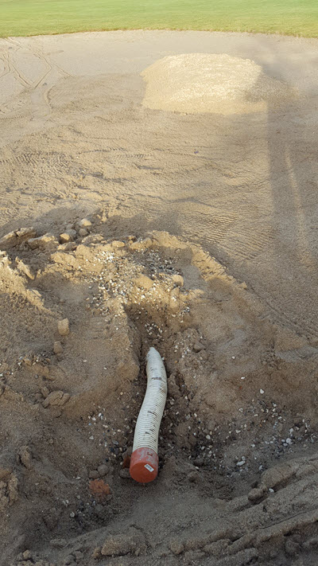
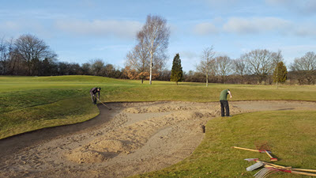
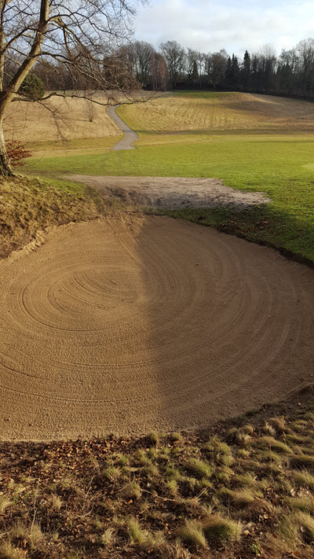

<div class="pages">
  <div data-page="580-148-tons-sand-og-renovering-spuling-af-draen" class="page navbar-fixed toolbar-fixed" >
    <div class="navbar">
      <div class="navbar-inner">
        <div class="left">
          <a href="#" class="link back icon-only"><i class="icon icon-back"></i></a>
          <!-- <a href="#" class="back link icon-only"><i class="icon icon-back"></i></a> -->
        </div>
        <div class="center">148 tons sand og renovering/spuling af dræn</div>
        <!-- <div class="right"></div> -->
        <div class="right">
        </div>
      </div>
    </div>
    <div class="page-content" style="padding-top:45px;">
       <div class="content-block">
          <p><b>148 tons sand og renovering/spuling af dræn</b></p>
          <p>Det er store mængder der er tale om når bunkerne skal fyldes med sand.
          <br /><br />
          En række bunkere har fået spulet/renoveret dræn, da de havde lidt svært ved at komme af med vandet.
          <br /><br /> 
          Nogen bunkere er efterfyldt - andre er totalt renoveret med opbygning af ny bund, spuling af dræn og nyt sand.
          <br /><br /> 
          Nu skal det nye sand lige sætte sig, og så er der rigtig gode bunkers i vente til sæsonstarten.
          <br /><br /> 
          Billede 1 viser bunkeren på femte hul og man kan lige ane det spulede dræn.
          <br /><br /> 
          Billede 2 viser det spulede dræn på tolvte hul.
          <br /><br /> 
          Billede 3 kan man næsten blive hensat til en sommerdag når Oliver tager en vinterdag i korte ærmer. Men det er bunkeren på tredje hul der får fordelt det nye sand.
          <br /><br /> 
          Billede 4 er fra fjortende hul. Her kan man se det færdige resultat af bunkerrenoveringen.</p>
          <center></center>
          <center></center>
          <center></center>
          <center></center>
        </div>
    </div>
    </div>
    </div>
  </div>
</div>
